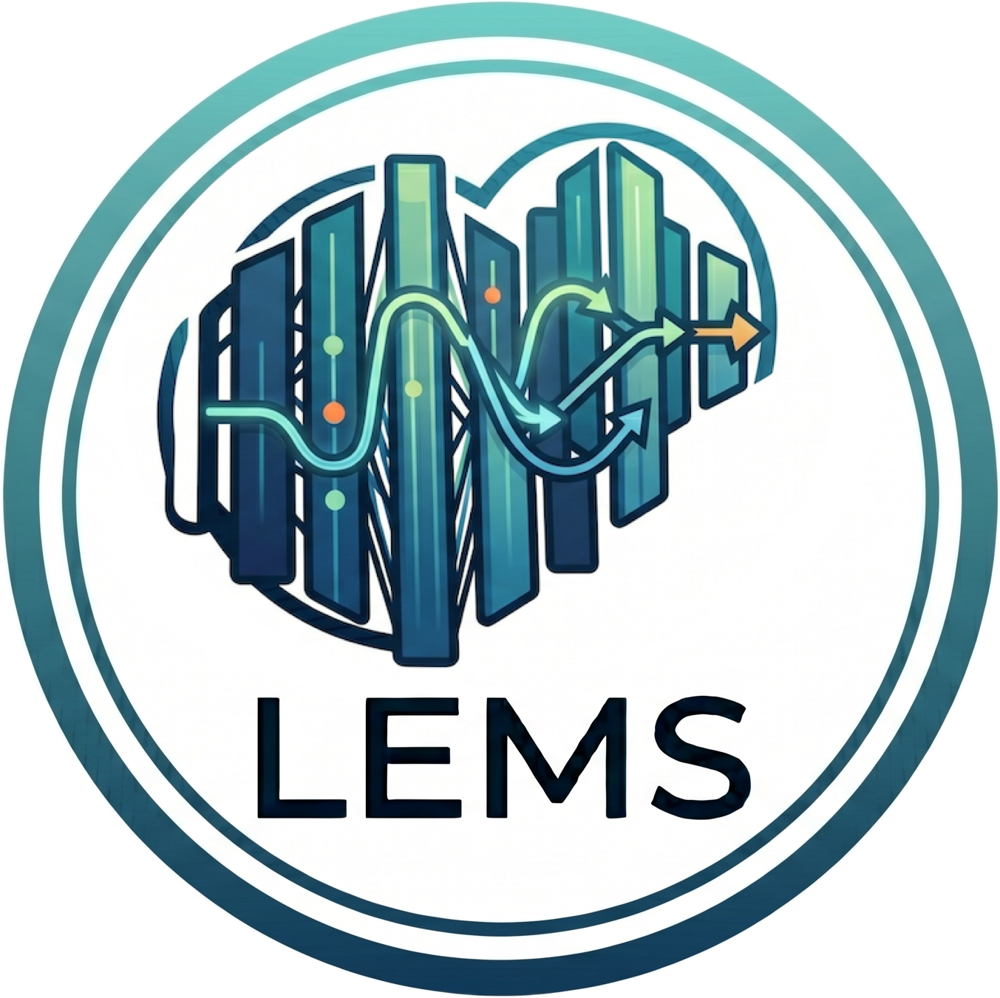

We propose Lems, a global rank allocator driven by a calibrated layer-wise error model of spectral shape, scale, and bias, and Kfac-SVD, which estimates the Fisher matrix with a token-wise approximation to address the rank bottleneck of prior Fisher-based SVD methods. Across Mistral, Qwen3, and Llama 3 families, Lems delivers zero-shot accuracy improvements of up to 4.8 p.p. generalizing to 70B parameters, while Kfac-SVD achieves an average perplexity improvement of 15%.
Low-rank SVD-based compression offers a powerful strategy to reduce the computational costs of LLMs. However, existing methods face two key limitations: (i) global rank allocation, where uncalibrated error proxies fail to capture complex error propagation, and (ii) decomposition quality, where Fisher-based estimators suffer from severe rank collapse. In this work, we address these limitations by introducing Layer-wise Error Modeling Search (Lems) and KFAC-SVD. Lems advances rank allocation by introducing a layer-wise error surrogate that integrates local and global layer importance alongside a propagation bias, enabling effective global rank allocation via an ILP formulation. Lems improves decomposition quality by utilizing token-wise statistics, mitigating the rank deficiency observed in prior Fisher-based SVD approaches. Across Mistral, Qwen3, and Llama 3 model families, we show that Lems consistently outperforms existing search strategies, delivering significant zero-shot accuracy improvements of up to 4.8 p.p. that generalize to model sizes of 70B parameters, while Lems achieves an average perplexity improvement of 15%.
How the LEMS components contribute to the perplexity score for Llama 3-8B (0.6, WikiText2 ↓).
Each component contributes to lower perplexity.
| Mistral-7B | Llama3-8B | Qwen3-8B | |||||||||||
|---|---|---|---|---|---|---|---|---|---|---|---|---|---|
| Search Method | Wiki↓ | C4↓ | PTB↓ | Acc↑ | Wiki↓ | C4↓ | PTB↓ | Acc↑ | Wiki↓ | C4↓ | PTB↓ | Acc↑ | |
| Baseline | 5.25 | 8.10 | 27.72 | 63.95 | 6.14 | 9.47 | 9.90 | 63.34 | 9.71 | 15.52 | 15.43 | 62.03 | |
| 0.8 | uniform | 7.14 | 19.43 | 64.84 | 52.35 | 11.44 | 52.00 | 80.06 | 47.69 | 12.52 | 31.85 | 47.25 | 53.56 |
| ASVD | 7.20 | 22.41 | 78.51 | 47.81 | 12.92 | 63.83 | 99.64 | 45.95 | 15.70 | 43.79 | 72.61 | 47.72 | |
| SVD-LLM v2 | 7.13 | 19.35 | 64.84 | 52.68 | 11.40 | 52.00 | 80.38 | 47.70 | 12.52 | 31.72 | 47.44 | 53.36 | |
| MRCS | 7.11 | 19.13 | 68.21 | 51.75 | 11.99 | 55.89 | 83.91 | 46.63 | 14.52 | 37.38 | 53.75 | 52.04 | |
| ARS | 7.26 | 11.74 | 47.71 | 54.58 | 11.81 | 20.44 | 28.83 | 54.31 | 11.58 | 22.41 | 25.05 | 55.66 | |
| ATP | 7.14 | 19.43 | 64.84 | 52.35 | 11.07 | 35.32 | 81.32 | 51.56 | 12.52 | 31.85 | 47.25 | 53.56 | |
| LEMS | 5.98 | 11.24 | 37.09 | 57.67 | 8.16 | 17.52 | 22.80 | 55.99 | 10.38 | 18.32 | 18.32 | 59.28 | |
| 0.6 | uniform | 14.38 | 72.05 | 208.48 | 39.10 | 48.56 | 475.36 | 1312.50 | 34.39 | 21.68 | 101.61 | 195.85 | 39.63 |
| ASVD | 16.78 | 102.00 | 317.89 | 35.56 | 75.21 | 571.15 | 1577.00 | 33.98 | 29.22 | 122.56 | 228.97 | 36.09 | |
| SVD-LLM v2 | 14.90 | 73.18 | 209.30 | 39.29 | 47.53 | 467.99 | 1242.65 | 34.43 | 21.42 | 96.95 | 189.82 | 39.74 | |
| MRCS | 14.21 | 74.05 | 253.45 | 37.44 | 67.95 | 610.37 | 1815.12 | 33.41 | 38.72 | 161.10 | 322.90 | 36.42 | |
| ARS | 19.43 | 37.09 | 166.87 | 40.83 | 28.77 | 56.55 | 112.03 | 40.57 | 29.51 | 83.91 | 161.10 | 40.72 | |
| ATP | 13.59 | 60.43 | 189.08 | 40.24 | 25.14 | 173.51 | 467.99 | 39.95 | 19.47 | 84.89 | 186.88 | 40.20 | |
| LEMS | 10.58 | 34.37 | 124.00 | 45.60 | 17.86 | 81.01 | 201.28 | 43.09 | 15.70 | 57.22 | 120.66 | 45.51 | |
| Mistral-7B | Llama3-8B | Qwen3-8B | |||||||||||
|---|---|---|---|---|---|---|---|---|---|---|---|---|---|
| SVD Method | Wiki↓ | C4↓ | PTB↓ | Acc↑ | Wiki↓ | C4↓ | PTB↓ | Acc↑ | Wiki↓ | C4↓ | PTB↓ | Acc↑ | |
| Baseline | 5.25 | 8.10 | 27.72 | 63.96 | 6.14 | 9.47 | 9.90 | 63.33 | 9.71 | 15.52 | 15.43 | 62.04 | |
| 0.9 | FWSVD | 9.47 | 13.75 | 58.35 | 56.93 | 42.11 | 59.96 | 69.83 | 48.88 | 16.95 | 24.75 | 31.54 | 53.82 |
| ASVD | 9.14 | 13.41 | 49.13 | 57.30 | 65.09 | 77.60 | 207.67 | 47.89 | 20.36 | 29.98 | 36.37 | 51.19 | |
| SVD-LLM | 6.46 | 15.07 | 66.12 | 56.81 | 10.14 | 39.63 | 49.91 | 52.27 | 12.52 | 27.40 | 36.66 | 55.96 | |
| SVD-LLM v2 | 6.46 | 15.07 | 66.12 | 56.78 | 10.18 | 39.71 | 50.40 | 52.17 | 12.52 | 27.45 | 36.80 | 55.80 | |
| DoBi-SVD | 7.11 | 15.19 | 63.58 | 55.17 | 11.22 | 34.77 | 42.36 | 52.98 | 13.46 | 28.88 | 35.81 | 55.48 | |
| GFWSVD | 31.66 | 65.09 | 305.72 | 40.73 | 2569.75 | 3827.63 | 8491.96 | 33.40 | 171.49 | 350.51 | 765.57 | 46.66 | |
| KFAC-SVD | 6.22 | 13.10 | 44.04 | 56.92 | 8.84 | 25.69 | 32.60 | 54.45 | 11.51 | 23.76 | 28.00 | 57.07 | |
| +LEMS | 5.37 | 8.49 | 29.86 | 62.77 | 6.58 | 11.11 | 11.29 | 61.99 | 9.85 | 16.04 | 15.77 | 62.89 | |
| 0.7 | FWSVD | 34.84 | 50.30 | 215.10 | 44.24 | 716.39 | 837.54 | 1939.75 | 33.40 | 41.37 | 68.75 | 90.72 | 42.68 |
| ASVD | 28.16 | 42.94 | 163.64 | 46.09 | 10989.41 | 9399.74 | 36032.89 | 33.03 | 70.66 | 96.95 | 131.49 | 43.10 | |
| SVD-LLM | 10.96 | 42.60 | 169.49 | 44.39 | 34.64 | 376.04 | 600.91 | 37.69 | 17.11 | 63.09 | 136.19 | 45.76 | |
| SVD-LLM v2 | 10.96 | 42.60 | 169.49 | 44.35 | 34.98 | 378.99 | 615.16 | 37.70 | 17.15 | 63.33 | 136.72 | 45.62 | |
| DoBi-SVD | 12.37 | 39.71 | 170.82 | 42.94 | 31.54 | 500.12 | 223.67 | 38.48 | 18.54 | 63.83 | 94.34 | 46.24 | |
| GFWSVD | 2549.75 | 3404.36 | 5355.81 | 32.29 | 41798.89 | 53670.83 | 72222.00 | 31.77 | 21684.98 | 27627.38 | 50814.52 | 34.06 | |
| KFAC-SVD | 9.29 | 34.64 | 110.72 | 45.76 | 19.43 | 151.34 | 253.45 | 40.73 | 14.69 | 50.00 | 93.97 | 46.78 | |
| +LEMS | 7.42 | 18.25 | 67.95 | 51.52 | 11.07 | 33.51 | 65.09 | 49.39 | 11.81 | 28.33 | 37.97 | 53.80 | |
@inproceedings{thoma_advancing_2026,
location = {Seoul, South Korea},
title = {Advancing {SVD}-based {LLM} Compression via Layer-Wise Error Model Search},
url = {https://openreview.net/forum?id=IjIgNPFuCt},
abstract = {Low-rank {SVD}-based compression offers a powerful strategy to reduce the computational costs of Large language models ({LLMs}); however, existing methods commonly encounter two recurring obstacles: (i) global rank allocation, where uncalibrated error proxies fail to account for complex error propagation, and (ii) decomposition quality, where Fisher-based estimators suffer from severe rank collapse. In this work, we address these limitations by presenting Layer-wise Error Modeling Search ({LEMS}) and {KFAC}-{SVD}. {LEMS} advances rank allocation by introducing a layer-wise error surrogate that integrates both local and global layer importance alongside a propagation bias, allowing us to determine global rank configurations efficiently as an Integer Linear Program ({ILP}). Simultaneously, {KFAC}-{SVD} improves decomposition quality by utilizing token-wise statistics, preventing the rank deficiency observed in prior Fisher-based {SVD}. We demonstrate across Mistral, Qwen3, and Llama-3 families that {KFAC}-{SVD} achieves an average perplexity improvements of 15\%, while {LEMS} consistently outperforms existing search strategies, delivering significant zero-shot accuracy improvements of up to 4.7 p.p. that generalize to scales of 70B parameters. Code is made available in the Supplement.},
eventtitle = {Forty-third International Conference on Machine Learning},
author = {Thoma, Moritz and Groezinger, Maximilian and Forstenhäusler, Maximilian and Aghajanzadeh, Emad and Vemparala, Manoj Rohit and Anagnostopoulos, Christos and Mori, Pierpaolo and Fasfous, Nael and Frickenstein, Alexander and Mueller-Gritschneder, Daniel and Schlichtmann, Ulf},
urldate = {2026-05-27},
date = {2026-04-30},
langid = {english},
}